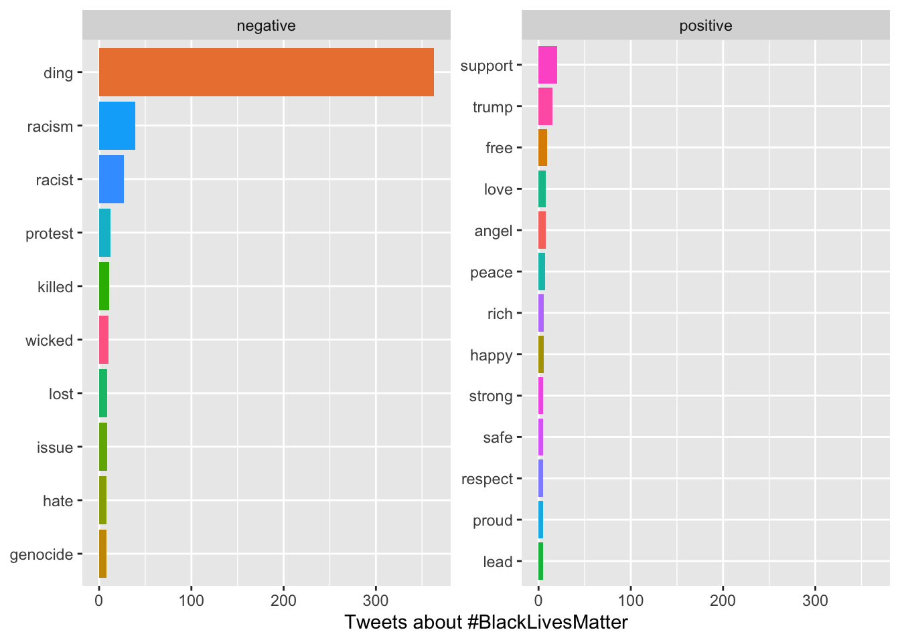
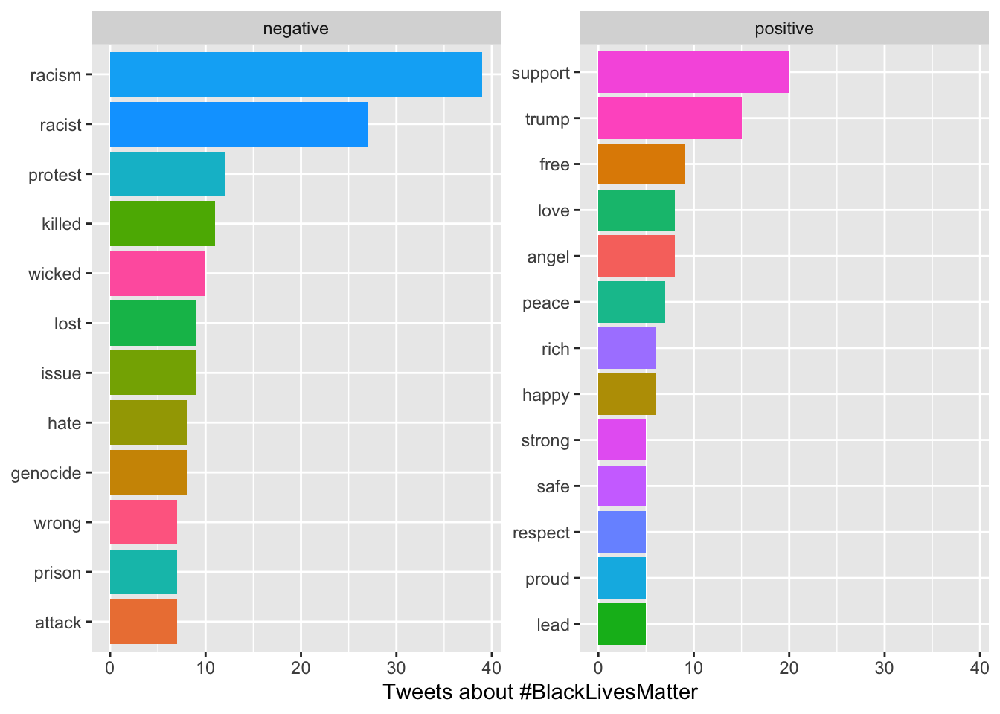
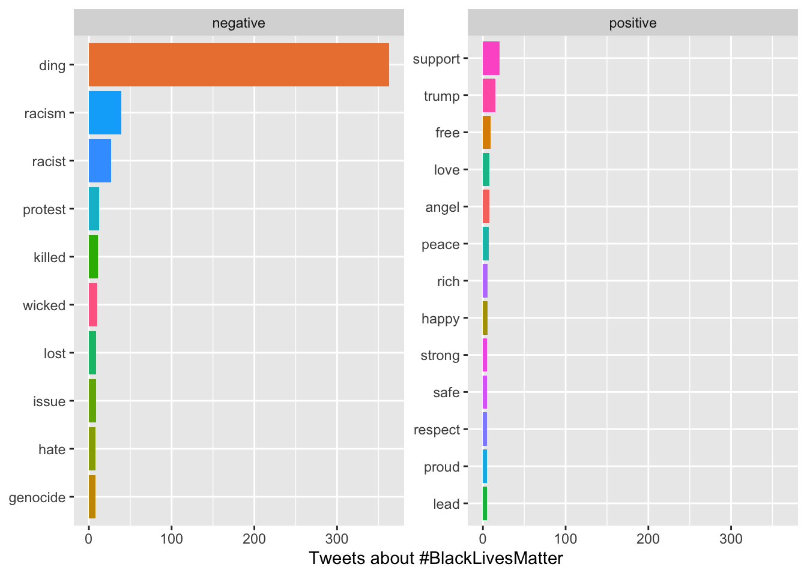
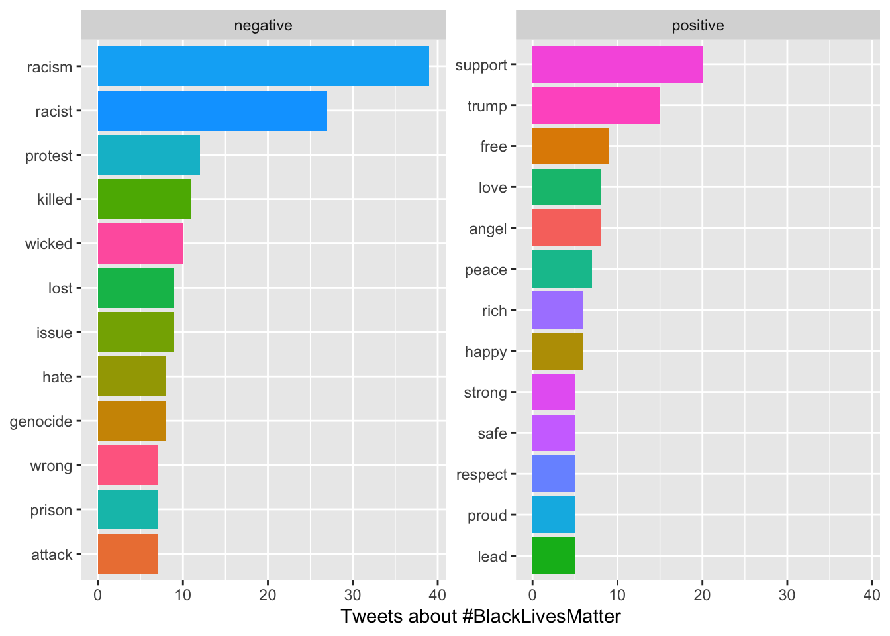

Introduction
Social Network Analysis (SNA) is a method of analyzing social structures by examining the relationships between social actors, such as individuals, organizations, or countries. In SNA, actors are represented as nodes or vertices, and relationships between them are represented as links or edges. The type of relationship can be undirected (e.g., friendship) or directed (e.g., communication flow), and it can also be weighted (e.g., strength of ties).
Here’s an example R code to create a simple network graph:
library(igraph)
# Create a sample graph with 4 nodes and 3 edges
g <- graph(edges=c(1,2,2,3,3,4), n=4, directed=FALSE)
# Plot the graph
plot(g, layout=layout.circle, vertex.label=1:4)

The graph() function from the igraph package is used to create the graph. The edges argument is used to specify the edges of the graph by passing a vector of node pairs. In this case, the graph is specified by passing the vector c(1,2,2,3,3,4), which means that there are three edges: (1,2), (2,3), and (3,4). The n argument is used to specify the number of nodes in the graph.
After creating the graph object g, the plot() function is used to visualize it. The layout.circle argument specifies that the graph should be displayed in a circular layout. The vertex.label argument specifies the labels for each node, in this case simply 1, 2, 3, and 4.
Social Network Analysis (SNA) involves several steps that researchers follow to understand the relationships and flows between social actors. The steps include:
Designing the study: The researcher selects appropriate research questions that will guide the study. For example, imagine you’re a social butterfly who loves attending parties and making new friends. You’re always curious about how people communicate and build relationships within a social circle. To explore this further, you decide to conduct a study on the patterns of communication within a social network. You want to understand how people interact, what topics they discuss, and how information spreads through the network.
Identifying relevant data sources: The researcher identifies data sources that will provide the necessary information to answer the research questions. For example, social media platforms like Twitter, Facebook, or LinkedIn can provide valuable data for a social network analysis.
Collecting data: Once the data sources are identified, the researcher collects the relevant data. Data can be collected through surveys, interviews, web scraping, or APIs.
Analyzing data: After collecting the data, the researcher analyzes it to identify patterns and structures in the network. There are several techniques and methods available for analyzing social network data, such as centrality measures, community detection, and network visualization.
Reviewing data: The researcher reviews the data to ensure that it is accurate and complete. This step involves checking for missing data, outliers, and errors.
Preparing evaluation: Once the data is reviewed, the researcher prepares an evaluation of the results. This step involves summarizing the findings and drawing conclusions based on the analysis.
Moving into action: Finally, the researcher moves into action by using the insights gained from the analysis to inform decision-making, policy development, or interventions. For example, a company may use the findings from a social network analysis to identify key influencers in their target market and develop targeted marketing campaigns.
Centrality Measures
Centrality measures are important metrics in SNA that help to identify the most important nodes or actors in the network. Degree centrality measures the number of links that a node has to other nodes. Closeness centrality measures how close a node is to all other nodes in the network. Betweenness centrality measures the extent to which a node lies on the shortest paths between other nodes. Eigenvector centrality measures a node’s importance based on the importance of its neighbors.
Here’s an example R code to compute the centrality measures for a sample network graph:
# Let's create a sample graph with 5 nodes and 6 edges
g <- graph(edges=c(1,2,1,3,2,3,2,4,3,5,4,5), n=5, directed=FALSE)
# Compute degree centrality
degree_centrality <- degree(g)
# Compute closeness centrality
closeness_centrality <- closeness(g)
# Compute betweenness centrality
betweenness_centrality <- betweenness(g)
# Compute eigenvector centrality
eigenvector_centrality <- eigen_centrality(g)$vector
# Plot the graph
plot(g, layout=layout.circle, vertex.label=1:5)

# Print the centrality measures for each node
for (i in 1:vcount(g)) {
cat(paste("Node", i, ": Degree=", degree_centrality[i],
"Closeness=", closeness_centrality[i],
"Betweenness=", betweenness_centrality[i],
"Eigenvector=", eigenvector_centrality[i], "\n"))
}
## Node 1 : Degree= 2 Closeness= 0.166666666666667 Betweenness= 0 Eigenvector= 0.806063433525369
## Node 2 : Degree= 3 Closeness= 0.2 Betweenness= 1.5 Eigenvector= 1
## Node 3 : Degree= 3 Closeness= 0.2 Betweenness= 1.5 Eigenvector= 1
## Node 4 : Degree= 2 Closeness= 0.166666666666667 Betweenness= 0.5 Eigenvector= 0.675130870566646
## Node 5 : Degree= 2 Closeness= 0.166666666666667 Betweenness= 0.5 Eigenvector= 0.675130870566646
In this example, we create a sample network graph with 5 nodes and 6 edges. We then compute the four centrality measures (degree, closeness, betweenness, and eigenvector) for each node using the appropriate functions provided by the igraph package. Finally, we print out the centrality measures for each node.
The code above is using a for loop to iterate over each node in the graph, with the variable “i” representing the node index. Within the loop, the “cat” function is used to print a message that includes the centrality measures for that particular node. The “paste” function is used to concatenate the various pieces of information into a single string.
Note that the output will show the centrality measures for each node in the network. You can use these measures to identify the most important nodes or actors in the network based on the particular centrality measure of interest.
When the “cat” function is used to print a message, including the “” sequence in the message string will cause the output to be separated into multiple lines, with each new line starting after the “” character.
So in the code provided, including the “” sequence at the end of the message string ensures that each line of output corresponds to a single node in the graph, making it easier to read and interpret the output.
Density, Reciprocity & Moduarity
Other important network metrics include density, which measures the proportion of possible connections that are present in the network, and reciprocity, which measures the extent to which relationships are mutual. Modularity measures the extent to which a network is divided into subgroups or modules.
Here are some R code examples to compute these network metrics:
# Let's create a sample graph with 6 nodes and 8 edges
g <- graph(edges=c(1,2,1,3,2,3,2,4,3,4,3,5,4,5,5,6), n=6, directed=FALSE)
# Compute density
density <- graph.density(g)
# Print the density
cat(paste("The density of the network is", density, "\n"))
## The density of the network is 0.533333333333333
In this example, we create a sample network graph with 6 nodes and 8 edges. We then compute the density of the graph using the graph.density function provided by the igraph package. The output shows the density of the network. We can tell that approximately 53.33% of all possible edges are present in the above network.
A high network density can indicate a highly interconnected network, while a low density can indicate a more sparse or disconnected network. The specific interpretation of a density value depends on the context of the network being analyzed and the goals of the analysis.
# Let's create another sample graph with 5 nodes and 7 edges
g <- graph(edges=c(1,2,1,3,2,3,3,4,4,3,4,5,5,4), n=5, directed=TRUE)
# Compute reciprocity
reciprocity <- reciprocity(g)
# Print the reciprocity
cat(paste("The reciprocity of the network is", reciprocity, "\n"))
## The reciprocity of the network is 0.571428571428571
In the above example, we create a sample directed network graph with 5 nodes and 7 edges. We then compute the reciprocity of the graph using the reciprocity function provided by the igraph package. The output shows the reciprocity of the network is .57, indicating that each pair of nodes in the network that are connected by a directed edge, approximately 57.14% of those pairs have reciprocal edges (i.e., edges going in both directions).
Reciprocity is an important measure of the symmetry of relationships in a network. A high reciprocity value indicates a high level of mutual connection or interaction between nodes, while a low reciprocity value indicates a more one-sided or unbalanced set of relationships.
The interpretation of a reciprocity value also depends on the context of the network being analyzed and the specific research question or hypothesis being tested.
# Let's create a more dense graph with 10 nodes and 14 edges
g <- graph(edges=c(1,2,1,3,1,4,2,3,2,5,3,5,4,5,6,7,6,8,6,9,6,10,8,9,9,10), n=10, directed=FALSE)
# Compute modularity
modularity <- modularity(g, membership=clusters(g)$membership)
# Print the modularity
cat(paste("The modularity of the network is", modularity, "\n"))
## The modularity of the network is 0.497041420118343
In this example, we create a sample network graph with 10 nodes and 14 edges. We then compute the modularity of the graph using the modularity function provided by the igraph package. The membership argument is used to specify the clusters or modules in the network. The output shows modularity of the network is .49, indicating This means that the network has a relatively high degree of modularity, indicating that the above network can be partitioned into relatively distinct and densely connected groups of nodes.
But the specific interpretation of a modularity value depends on the context of the network being analyzed and the research question or hypothesis being tested. It is also worth noting that different methods of calculating modularity may yield slightly different values, and modularity values can be affected by factors such as network size, density, and edge weight.
In summary, SNA is a powerful method for analyzing social structures and relationships. By examining patterns of connections and interactions between social actors, SNA can help to identify key actors and structures in a network, and can inform interventions and policy decisions aimed at improving social outcomes.
Chapter 8 Social Network Analysis
8.1 Introduction
Social Network Analysis (SNA) is a method of analyzing social structures by examining the relationships between social actors, such as individuals, organizations, or countries. In SNA, actors are represented as nodes or vertices, and relationships between them are represented as links or edges. The type of relationship can be undirected (e.g., friendship) or directed (e.g., communication flow), and it can also be weighted (e.g., strength of ties).
Here’s an example R code to create a simple network graph:
 The graph() function from the igraph package is used to create the graph. The edges argument is used to specify the edges of the graph by passing a vector of node pairs. In this case, the graph is specified by passing the vector c(1,2,2,3,3,4), which means that there are three edges: (1,2), (2,3), and (3,4). The n argument is used to specify the number of nodes in the graph.
After creating the graph object g, the plot() function is used to visualize it. The layout.circle argument specifies that the graph should be displayed in a circular layout. The vertex.label argument specifies the labels for each node, in this case simply 1, 2, 3, and 4.
Social Network Analysis (SNA) involves several steps that researchers follow to understand the relationships and flows between social actors. The steps include:
Designing the study: The researcher selects appropriate research questions that will guide the study. For example, imagine you’re a social butterfly who loves attending parties and making new friends. You’re always curious about how people communicate and build relationships within a social circle. To explore this further, you decide to conduct a study on the patterns of communication within a social network. You want to understand how people interact, what topics they discuss, and how information spreads through the network.
Identifying relevant data sources: The researcher identifies data sources that will provide the necessary information to answer the research questions. For example, social media platforms like Twitter, Facebook, or LinkedIn can provide valuable data for a social network analysis.
Collecting data: Once the data sources are identified, the researcher collects the relevant data. Data can be collected through surveys, interviews, web scraping, or APIs.
Analyzing data: After collecting the data, the researcher analyzes it to identify patterns and structures in the network. There are several techniques and methods available for analyzing social network data, such as centrality measures, community detection, and network visualization.
Reviewing data: The researcher reviews the data to ensure that it is accurate and complete. This step involves checking for missing data, outliers, and errors.
Preparing evaluation: Once the data is reviewed, the researcher prepares an evaluation of the results. This step involves summarizing the findings and drawing conclusions based on the analysis.
Moving into action: Finally, the researcher moves into action by using the insights gained from the analysis to inform decision-making, policy development, or interventions. For example, a company may use the findings from a social network analysis to identify key influencers in their target market and develop targeted marketing campaigns.
8.2 Centrality Measures
Centrality measures are important metrics in SNA that help to identify the most important nodes or actors in the network. Degree centrality measures the number of links that a node has to other nodes. Closeness centrality measures how close a node is to all other nodes in the network. Betweenness centrality measures the extent to which a node lies on the shortest paths between other nodes. Eigenvector centrality measures a node’s importance based on the importance of its neighbors.
Here’s an example R code to compute the centrality measures for a sample network graph:

In this example, we create a sample network graph with 5 nodes and 6 edges. We then compute the four centrality measures (degree, closeness, betweenness, and eigenvector) for each node using the appropriate functions provided by the igraph package. Finally, we print out the centrality measures for each node.
The code above is using a for loop to iterate over each node in the graph, with the variable “i” representing the node index. Within the loop, the “cat” function is used to print a message that includes the centrality measures for that particular node. The “paste” function is used to concatenate the various pieces of information into a single string.
Note that the output will show the centrality measures for each node in the network. You can use these measures to identify the most important nodes or actors in the network based on the particular centrality measure of interest.
When the “cat” function is used to print a message, including the “” sequence in the message string will cause the output to be separated into multiple lines, with each new line starting after the “” character.
So in the code provided, including the “” sequence at the end of the message string ensures that each line of output corresponds to a single node in the graph, making it easier to read and interpret the output.
8.3 Density, Reciprocity & Moduarity
Other important network metrics include density, which measures the proportion of possible connections that are present in the network, and reciprocity, which measures the extent to which relationships are mutual. Modularity measures the extent to which a network is divided into subgroups or modules.
Here are some R code examples to compute these network metrics:
In this example, we create a sample network graph with 6 nodes and 8 edges. We then compute the density of the graph using the graph.density function provided by the igraph package. The output shows the density of the network. We can tell that approximately 53.33% of all possible edges are present in the above network.
A high network density can indicate a highly interconnected network, while a low density can indicate a more sparse or disconnected network. The specific interpretation of a density value depends on the context of the network being analyzed and the goals of the analysis.
In the above example, we create a sample directed network graph with 5 nodes and 7 edges. We then compute the reciprocity of the graph using the reciprocity function provided by the igraph package. The output shows the reciprocity of the network is .57, indicating that each pair of nodes in the network that are connected by a directed edge, approximately 57.14% of those pairs have reciprocal edges (i.e., edges going in both directions).
Reciprocity is an important measure of the symmetry of relationships in a network. A high reciprocity value indicates a high level of mutual connection or interaction between nodes, while a low reciprocity value indicates a more one-sided or unbalanced set of relationships.
The interpretation of a reciprocity value also depends on the context of the network being analyzed and the specific research question or hypothesis being tested.
In this example, we create a sample network graph with 10 nodes and 14 edges. We then compute the modularity of the graph using the modularity function provided by the igraph package. The membership argument is used to specify the clusters or modules in the network. The output shows modularity of the network is .49, indicating This means that the network has a relatively high degree of modularity, indicating that the above network can be partitioned into relatively distinct and densely connected groups of nodes.
But the specific interpretation of a modularity value depends on the context of the network being analyzed and the research question or hypothesis being tested. It is also worth noting that different methods of calculating modularity may yield slightly different values, and modularity values can be affected by factors such as network size, density, and edge weight.
In summary, SNA is a powerful method for analyzing social structures and relationships. By examining patterns of connections and interactions between social actors, SNA can help to identify key actors and structures in a network, and can inform interventions and policy decisions aimed at improving social outcomes.